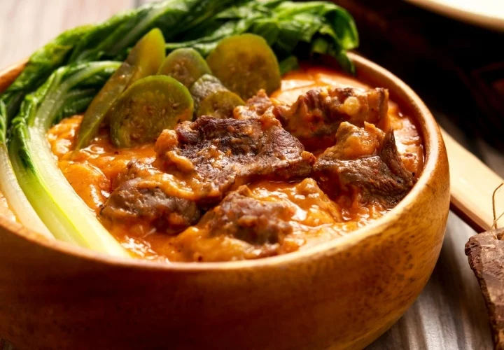

Kare-Kare

What's Kare-Kare?
Kare-Kare is a rich Filipino stew made with a savory peanut sauce. It's
usually made with oxtail, but beef chuck, shank, pork shank, pork hock (aka Pata
Kare-Kare) are all very popular choices of meat. The thick and tasty peanut sauce complements the tender oxtail,
and this meal is usually accompanied
by white rice and bagoong. (a fermented shrimp paste)
There are three steps to this process: Tenderizing the meat, making the sauce,
and preparing the vegetables. Tenderize the meat by boiling it with chopped onion in a
pressure cooker, which takes about 30 minutes.(3 hours otherwise for oxtail) Make sure
you have enough water poured in, so the meat is fully tenderized.
The bagoong (shrimp paste) is an essential addition to this dish, so make sure it's fully cooked
before serving. Another tip is using toasted ground rice to thicken the sauce. (Cornstarch or potato
starch are good alternatives!)
Peanut sauce tips: Using peanut butter and crushed peanuts makes a richer flavor,
and soaking annatto seeds in warm water, then using the water gives it that
reddish color for the sauce. (More convenient alternatives are annatto powder/paste) Finally, just a tip for the
vegetables: Sauteeing them in garlic
before adding to the meat is a great way to enhance their own flavor, so they don't blend into the background
once in the stew.
Ingredients
For the stew
- 3 lbs oxtail (cut in 2 inch slices)
- 1 small banana flower bud (sliced | optional, can find at Asian store)
- 1 bundle bok choy
- 1 bundle string beans (cut into 2 inch slices
- 4 pieces eggplants (sliced)
- 1 cup ground peanuts
- 1/2 cup peanut butter
- 1/2 cup shrimp paste
- 34 oz water (1 liter)
- 1/2 annatto seeds (soak seeds in cup of water)
- 1/2 cup toasted ground rice (ground rice flour in powder form,
toasted in pan til color turns light brown)
- t tbsp garlic (minced)
- 1 onion (chopped)
- salt and pepper
For the Bagoong
- 2 cups bagoong alamang (preferably colorless)
- 1/4 cup canola oil
- 1/2 cup sugar
- 2 Thai chili peppers (optional)
- 1 tbsp corn starch
- 2 tbsp water
Instructions for Bagoong (Shrimp paste)
- Rinse shrimp paste in fine-mesh sieve under cold, running water to get rid of excess salt. Drain well
- In a wide pan, heat oil over medium heat
- Add sugar and cook. Stir regularly until sugar is fully dissolved and lightly brown
- Add bagoong and cook. Stir regularly for about 3-5 minutes (or until color darkens)
- Add minced peppers, if using
- In a small bowl, combine corn starch and water. Stir until smooth
- Add corn starch mix to the pan and stir until well-combined. Keep cooking until shrimp paste is slightly thick
Instructions for Kare Kare
In a large pot, bring water to a boil.
Put in oxtail, followed by onions and simmer for 2.5-3 hrs (or until tender. 35 mins if using pressure cooker)
Once meat is tender, add ground peanuts, peanut butter, and water from annatto seed mixture. (that's our coloring) Simmer for 5-7 mins
Add toasted ground rice and simmer for 5 mins
In a different pan, sautee garlic and add banana flower, eggplant, and string beans. Cook for 5 mins
Transfer cooked vegetables to large pot with the rest of ingredients
Add salt and pepper to taste. Serve hot with shrimp paste and white rice. Enjoy!